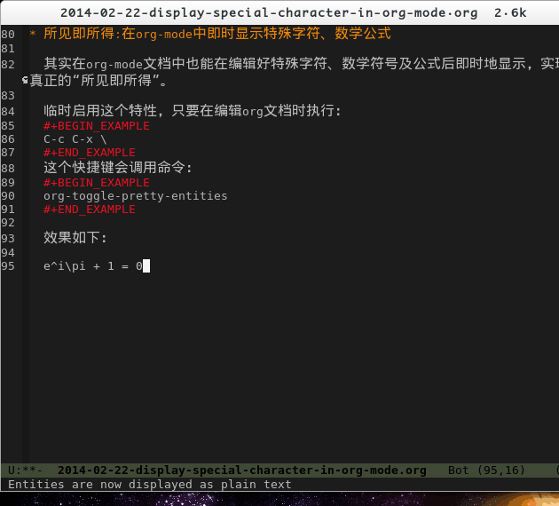
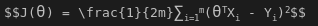

在Org-mode中显示特殊字符
在Org-mode中编写数学公式
在Org-mode中可以编写符合Latex语法的数学符号及公式，并且在发布成网页时以易读的形式展示。
比如下面这段语句：
$$e^{i\pi} + 1 = 0$$
会显示成： $$e^{i\pi} + 1 = 0$$
要启用这个功能，需要在发布成网页时在模板头部中包含：
<script type="text/javascript" src="http://orgmode.org/mathjax/MathJax.js"></script> <script type="text/javascript"> <!--/*--><![CDATA[/*><!--*/ MathJax.Hub.Config({ // Only one of the two following lines, depending on user settings // First allows browser-native MathML display, second forces HTML/CSS // config: ["MMLorHTML.js"], jax: ["input/TeX"], jax: ["input/TeX", "output/HTML-CSS"], extensions: ["tex2jax.js","TeX/AMSmath.js","TeX/AMSsymbols.js", "TeX/noUndefined.js"], tex2jax: { inlineMath: [ ["\\(","\\)"] ], displayMath: [ ['$$','$$'], ["\\[","\\]"], ["\\begin{displaymath}","\\end{displaymath}"] ], skipTags: ["script","noscript","style","textarea","pre","code"], ignoreClass: "tex2jax_ignore", processEscapes: false, processEnvironments: true, preview: "TeX" }, showProcessingMessages: true, displayAlign: "center", displayIndent: "2em", "HTML-CSS": { scale: 100, availableFonts: ["STIX","TeX"], preferredFont: "TeX", webFont: "TeX", imageFont: "TeX", showMathMenu: true, }, MMLorHTML: { prefer: { MSIE: "MML", Firefox: "MML", Opera: "HTML", other: "HTML" } } }); /*]]>*///--> </script>
在将单个org-mode文档导出成网页时，模板中时默认有此内容的，可以不用进行特别的设置。不过在将一个目录作为项目发布成网页时，出于简洁的目的，可能会有如下设置：
(setq org-publish-project-alist
'(
("blog-org"
...
:html-head-include-scripts nil
...)
...))
这条语句会使项目在发布时去除默认模板中包含的一些js片段，这是需要注意的地方。
所见即所得:在org-mode中即时显示特殊字符、数学公式
其实在org-mode文档中也能在编辑好特殊字符、数学符号及公式后即时地显示，实现真正的“所见即所得”。
临时启用这个特性，只要在编辑org文档时执行：
C-c C-x \
这个快捷键会调用命令：
org-toggle-pretty-entities
效果如下： 
不过效果并不是非常好，和Texmacs还有区别。对于单个的特殊字符如希腊字母，效果时可以的，但对于一些复杂的数学公式，比如
$$J(\theta) = \frac{1}{2m}\sum_{i=1}^{m}(\theta^{T}X_{i} - Y_{i})^2$$
理想的显示效果应该时： $$J(\theta) = \frac{1}{2m}\sum_{i=1}^{m}(\theta^{T}X_{i} - Y_{i})^2$$
但它的实际显示效果却是： 
可以看出org-mode的这个功能中对特殊字符的解析和Latex的语法并不一致，至于是否存在解决办法，这个就有待以后讨论吧。